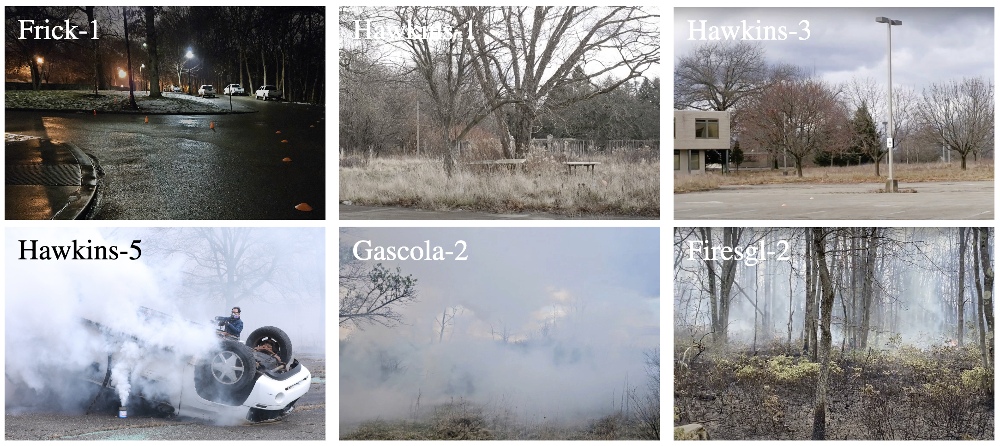
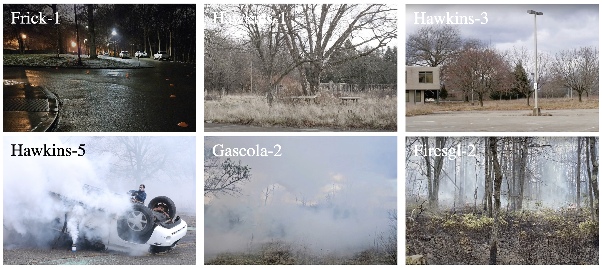
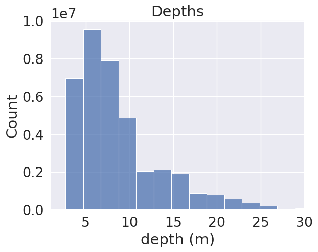
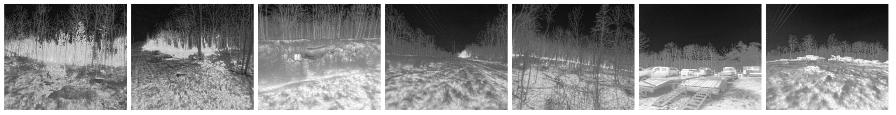

Hardware setup
A pair of stereo thermal cameras, a LiDAR, and an inertial measurement unit (IMU) are mounted on an unmanned aerial vehicle (UAV) platform, which supports data collection during handheld experiments and UAV flights. The stereo thermal pair is facing forward with a 24.6 cm baseline, and the LiDAR is positioned on top of the UAV. An onboard NVIDIA® Jetson AGX Orin™ computer is connected to the sensors. Setup and coordinate system for each sensor:

Sensor specifications:

Data Collection
Depth Map Generation:
- Obtain calibration for Stereo thermal - IMU and LiDAR - IMU.
- Use LiDAR and IMU data for SLAM to estimate UAV trajectory and generate 3D scene reconstruction.
- Interpolate odometry pose to thermal timestamps and obtain camera pose.
- Project point cloud to camera frame using calibration extrinsics.
- Handle occlusion with 2D grid blocking and filter points with left-right consistency.
The resulting depth map is in the left camera frame, and stereo disparity can be obtained with provided calibration, supporting both monocular and stereo depth estimation. A closed-loop trajectory was followed with the same initial and final position, making the dataset suitable for testing loop closure and accumulated drift for mapping and localization.
 The data includes recordings from 4 distinct locations and 16 unique trajectories under various
environmental conditions, including day, night, rain, cloud cover, smoke. Smoke was emitted from training-grade smoke pots,
with one location featuring smoke from an actual prescribed fire.

The data includes recordings from 4 distinct locations and 16 unique trajectories under various
environmental conditions, including day, night, rain, cloud cover, smoke. Smoke was emitted from training-grade smoke pots,
with one location featuring smoke from an actual prescribed fire.

Data Description
 The processed FIReStereo dataset contains 204,594 stereo thermal images total across all environments. 29% are in urban environment, 15% are in mixed environment, 56% are in wilderness environment with dense trees. 84% of the images were collected in day-time and the rest were during night-time. Obstacles were measured at a median depth of 7.40 m, with quartiles q1 = 5.17 m and q3 = 10.52 m, which falls within the typical range for UAS obstacle avoidance. Histogram on the right shows the distribution of distances to objects. 42% stereo thermal pairs are smokeless, while 58% contain smoke. Of the smokeless images, 35,706 have corresponding depth-map pairs.
Our data various in environment conditions and varying amounts of clutter spanning sub-urban settings, sparse trees, and dense trees. Depth data is available for the first two locations, while the latter two are intended for testing purposes. A detailed description of each sequence in the 4 locations can be found in the dataset text file.
- Hawkins: Collected on a cloudy and windy day, featuring scenes of dense forest and urban structures.
- Frick: Collected on a rainy night, featuring bare trees in varying sparity and urban objects.
- Gascola: Collected in heavily degraded wilderness during day and night, featuring dense smoke and vegetation to simulate wildfire disaster response scenario.
- Firesgl: Collected during an actual prescribed fire, featuring dense forest, smoke, and fire.

Noticebly, flames, fire embers, and objects relevant to diaster response are visible in the Firesgl collection, making it useful for developing algorithms like ember detection for wildfire monitoring.
Evaluation
We implemented 5 representative stereo depth estimation models to evaluate the capabilities of our new dataset in facilitating robust depth estimation for UAS navigation in cluttered environment. More details and quantitative results can be found in the paper.
- Lightweight networks: Fast-ACVNet, MobileStereoNet
- 3D networks: AANet, GWCNet, PSMNet
Fast-ACVNet is used to generate qualitative results, as it is best suited for running on a low Size, Weight, Power, and Cost (SWaP-C) system while maintaining similar performance to the more resource-intensive models. We observe the model trained on our dataset is now able to estimate depth for outdoor thermal images with challenging objects, such as thin tree branches and poles, where were previously difficult to capture.

We further evaluate the trained model on unseen environment with highly dense smoke conditions. Results show than the model trained on smokeless data is able to generalize to these smoke-filled environments.